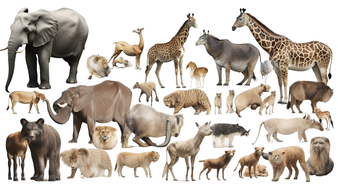

MARIESHWARI PONMARIAPPAN
PYTHON FULL STACK DEVELOPER
ANIMALS INFO

Animals are found as long ago as the Ediacaran biota, towards the end of the Precambrian, and possibly somewhat earlier. It had long been doubted whether these life-forms included animals,[87][88][89] but the discovery of the animal lipid cholesterol in fossils of Dickinsonia establishes their nature.[90] Animals are thought to have originated under low-oxygen conditions, suggesting that they were capable of living entirely by anaerobic respiration, but as they became specialized for aerobic metabolism they became fully dependent on oxygen in their environments.[91]
Many animal phyla first appear in the fossil record during the Cambrian explosion, starting about 539 million years ago, in beds such as the Burgess shale.[92] Extant phyla in these rocks include molluscs, brachiopods, onychophorans, tardigrades, arthropods, echinoderms and hemichordates, along with numerous now-extinct forms such as the predatory Anomalocaris. The apparent suddenness of the event may however be an artefact of the fossil record, rather than showing that all these animals appeared simultaneously.[93][94][95][96] That view is supported by the discovery of Auroralumina attenboroughii, the earliest known Ediacaran crown-group cnidarian (557–562 mya, some 20 million years before the Cambrian explosion) from Charnwood Forest, England. It is thought to be one of the earliest predators, catching small prey with its nematocysts as modern cnidarians do.[97]
ANIMALS TYPES